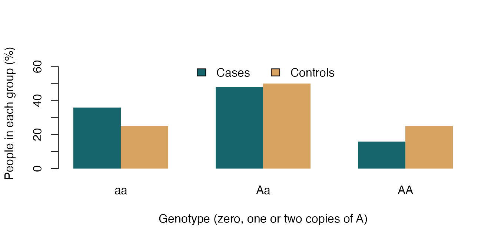
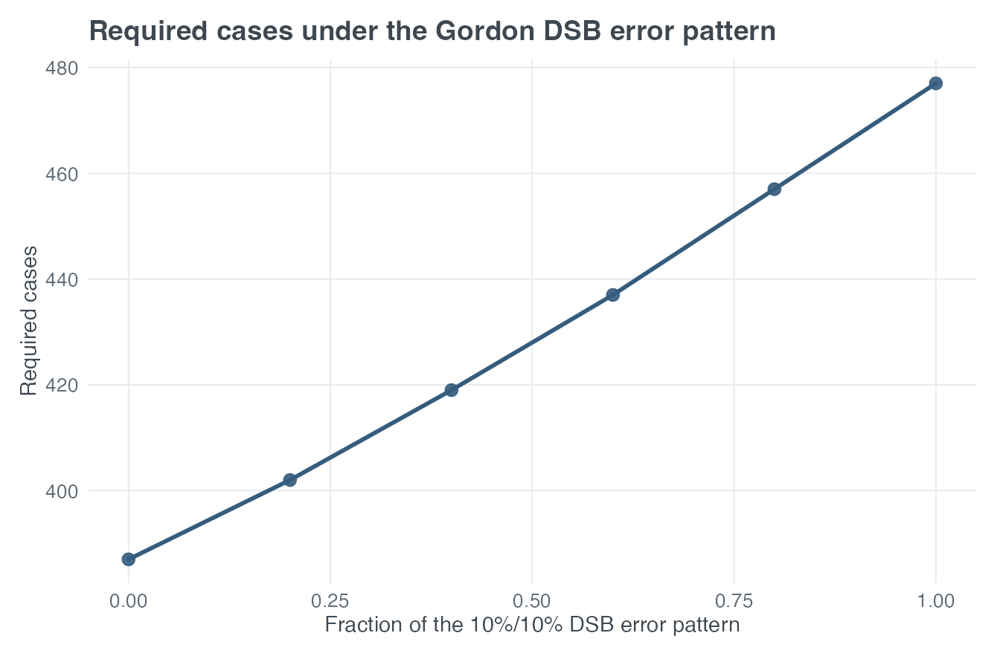
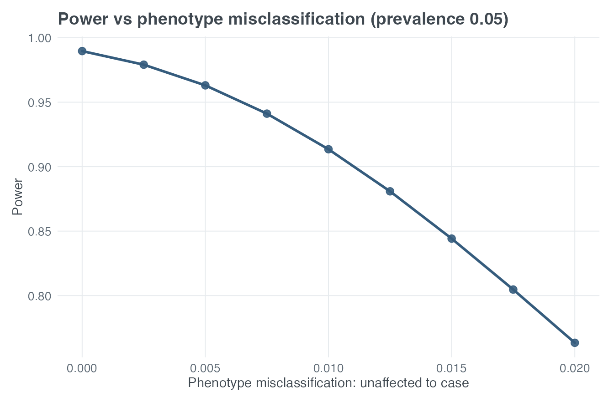
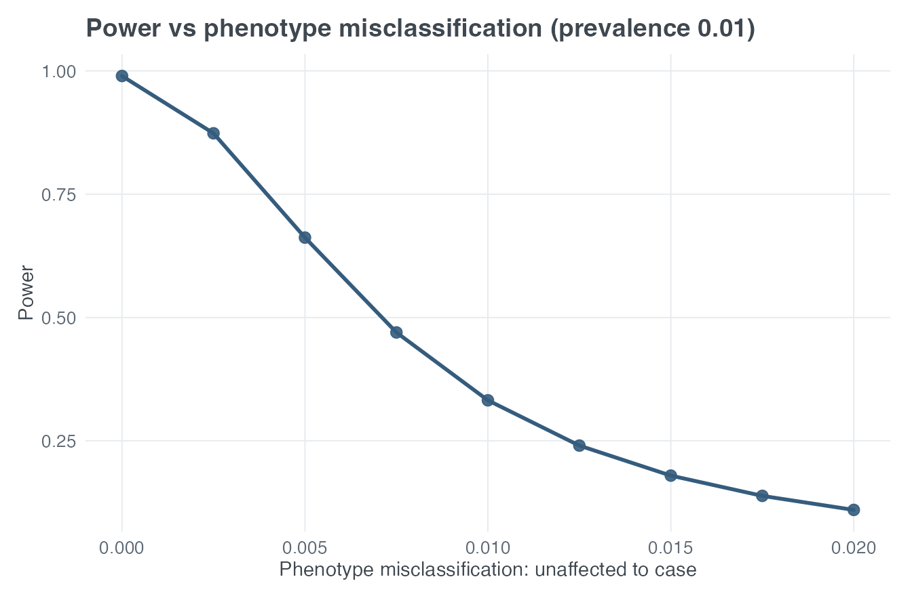
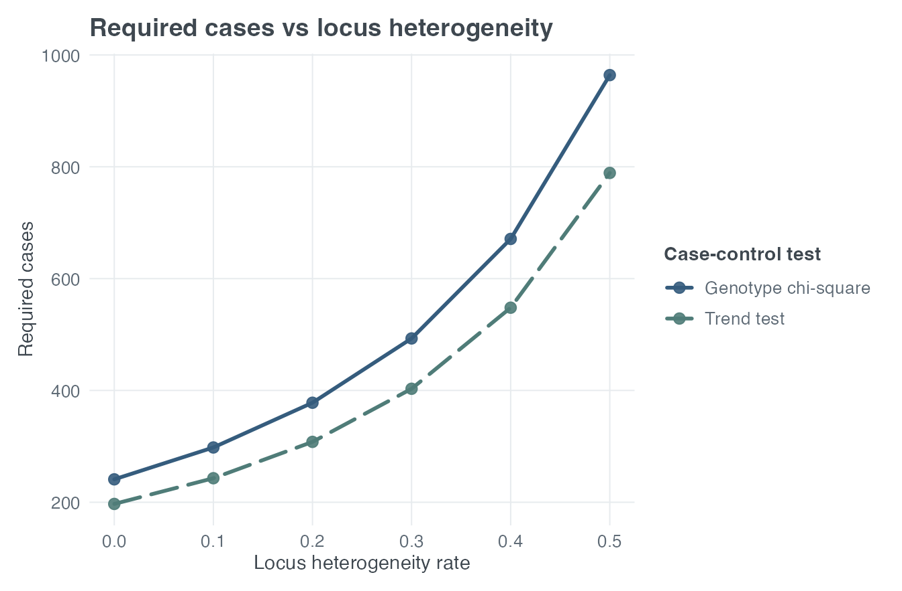

2. Case-Control Study Design
paweh package authors
Source:vignettes/paweh-02-case-control-study-design.Rmd
paweh-02-case-control-study-design.RmdCan we recruit enough people to detect an association?
A clinic can recruit 500 unrelated people with a particular disease. A partner clinic can recruit 500 people from the same source population who are free of the disease. The investigators suspect that one common DNA variant affects disease risk. Would comparing these cases and controls give them a good chance of detecting the difference they expect?
Before collecting samples, the investigators can specify a plausible genetic effect and choose the test they intend to run. Power is the probability that this test declares an association if that effect exists. If recruitment is flexible, they can instead choose a target power and ask for the minimum sample size necessary (MSSN). We will do both, then see how the recruitment decision changes when a genotype call or a diagnosis can be wrong.
What does a genotype frequency measure?
At a biallelic variant there are two versions of the DNA sequence, or alleles. Call them A and a. At this location on a non-sex chromosome, each person carries two copies, one from each parent. Count copies of A in the same order throughout the study: aa = 0, Aa = 1, AA = 2. Aa is a heterozygote (different alleles). Both aa and AA are homozygotes (matching alleles).
Suppose a pilot study found 36 aa, 48 Aa and 16 AA among 100 cases,
and 25 aa, 50 Aa and 25 AA among 100 controls. Dividing each count by
the number of people in its own group gives a genotype
distribution. In paweh, g1 holds the three
case proportions and g0 the three control proportions. Each
vector sums to one. The suffix labels disease status.
pilot_case <- c(aa = 36, Aa = 48, AA = 16)
pilot_ctrl <- c(aa = 25, Aa = 50, AA = 25)
g1 <- pilot_case / sum(pilot_case)
g0 <- pilot_ctrl / sum(pilot_ctrl)
In this illustrative pilot, cases more often carry aa and controls more often carry AA. Each set of three bars accounts for all people in its group.
An allele frequency counts copies across chromosomes. The 48 Aa cases contribute 48 copies of A and the 16 AA cases contribute another 32. That gives 80 copies among 200 chromosomes, or 40%, even though just 16% of cases are AA. The control allele frequency is 50%. A variant that affects disease risk, or is inherited alongside one that does, can produce a difference. Ancestry differences or sampling variation can also produce one.
Sometimes a paper gives only the allele frequency . Under Hardy–Weinberg equilibrium (HWE), the two allele copies pair independently at that frequency. The expected fractions with zero, one and two copies are , and . With these are 0.36, 0.48 and 0.16. Using HWE separately in cases and controls is an explicit assumption in the published examples below. Directly observed genotype proportions can be supplied even when they depart from HWE.
Which difference should the planned test detect?
Pearson’s genotype chi-square test compares the counts in the two rows of a three-genotype table with the counts expected if genotype and disease status were independent. A shift in any category can count as evidence. The three differences in group proportions sum to zero, so knowing two fixes the third. This leaves two degrees of freedom.
The Cochran–Armitage trend test assigns each
genotype a prespecified score. The default weights
w = c(0, 1, 2) score aa, Aa and AA by copies of A.
Comparing the two groups’ mean scores measures one contrast, giving
one degree of freedom. In the pilot the mean is 0.8
copies per case and 1.0 per control. A test directed at this shift can
need fewer participants.
Now imagine that in one group both homozygotes become less frequent by the same amount and heterozygotes become more frequent. Replacing one aa and one AA with two Aa leaves the mean score unchanged. The genotype test can detect this redistribution even though the copy-count contrast vanishes. Choose the test and scores to match the scientific hypothesis before examining study results. Armitage (1955) describes the trend test.
Calculate power and recruitment from a disease model
Return to the clinics’ proposed study. This time the available evidence concerns disease risk in the population. The team can use that evidence without estimating the case and control distributions separately.
| Argument | Assumption or decision |
|---|---|
prev = 0.05 |
Five percent of the source population is affected. Recruiting equal-sized groups is a separate design decision. |
pd = 0.30 |
Thirty percent of allele copies in the source population are the modeled disease allele. |
R2 = 1.8 |
Two-copy carriers have 1.8 times the disease probability of zero-copy carriers. Enter a risk ratio here. An odds ratio compares odds and generally has a different value. |
MOI = "M" |
Each copy multiplies risk by the same factor. The one-copy relative
risk is therefore
.
Dominant ("D") and recessive ("Rec") models
give one-copy carriers the risk of two- and zero-copy carriers,
respectively. |
N_case = 500, k = 1
|
Plan 500 cases. The ratio gives one control per case, hence 1,000 people. |
alpha = 0.05 |
Set a 5% nominal false-positive probability under no association for this prespecified test. A genome-wide scan needs a threshold accounting for many tests. |
power = 0.80 |
For the inverse calculation, find the group sizes that attain at least 80% power under the model. |
With input_mode = "model_based", both functions start
with HWE in the source population. They use the relative risks and
overall prevalence to obtain disease probabilities for each genotype.
Weighting genotypes by their probabilities of being affected gives the
case distribution after normalization. Weighting by the probabilities of
being unaffected yields the control distribution.
verbose = FALSE lets us display the planned tests side by
side.
basic_cc_power <- cc_power(
N_case = 500, alpha = 0.05,
input_mode = "model_based",
prev = 0.05, pd = 0.30, R2 = 1.8, MOI = "M",
k = 1, verbose = FALSE
)
basic_cc_mssn <- cc_mssn(
power = 0.80, alpha = 0.05,
input_mode = "model_based",
prev = 0.05, pd = 0.30, R2 = 1.8, MOI = "M",
k = 1, verbose = FALSE
)| Test | Power | Cases | Controls | Total |
|---|---|---|---|---|
| Genotype | 0.8367 | 457 | 457 | 914 |
| Trend | 0.9011 | 373 | 373 | 746 |
Read the power column at the fixed budget. The
genotype test would detect the modeled association in about 84% of
repeated studies. The trend test would detect it in about 90%. Read the
recruitment columns at the 80% target. For the genotype
test, recruit 457 cases and 457 controls (914 people). For a
prespecified trend test, 373 cases and 373 controls (746 people) suffice
under this multiplicative model. These are alternative study plans. The
package rounds the required case count up, then rounds up the control
count implied by k. The attained power can therefore exceed
the target slightly.
Use pilot frequencies when they are the evidence you have
When comparable pilot data or a publication give genotype counts by
disease status, use input_mode = "model_free". The two
distributions directly encode the expected association. For example, use
the frequencies from the figure to plan a new study of
500 cases and 500 controls:
pilot_plan <- cc_power(
N_case = 500, k = 1, alpha = 0.05, input_mode = "model_free",
g1 = g1, g0 = g0, verbose = FALSE
)
c(genotype = pilot_plan$tests$genotypes$power,
trend = pilot_plan$tests$trend$power)
#> genotype trend
#> 0.9852151 0.9940005Here the assumed frequencies give 98.5% genotype-test power and 99.4% trend-test power. The two input modes answer the same design question. The higher power here reflects the stronger contrast supplied by the pilot. An estimate from 100 people per group can be imprecise, especially for uncommon genotypes. Repeat the calculation with plausible smaller differences, keeping the future recruitment budget fixed. If applying an error model, establish that the inputs represent the intended true distributions before applying error to them.
How can biology or measurement change that contrast?
| What happens | What changes in the comparison |
|---|---|
| Locus heterogeneity. People with the same diagnosis can have different underlying genetic causes. | If only a fraction of cases has the modeled association, mixing them with other cases can make the case distribution resemble that of controls. |
| Genotype misclassification. The assay records a person with Aa as AA. | This person stays in the same disease group but moves between genotype columns. Distinct error patterns across the two groups can even create an apparent association. |
| Phenotype misclassification. A person with disease is recorded as unaffected, or the reverse. | The genotype stays the same but contributes to the wrong disease group. The observed rows become mixtures of truly affected and unaffected people. |
The next two examples use published designs so that we can check both the meaning of the inputs and the size of the effects against the original results.
Genotype misclassification in Gordon et al. (2002)
Gordon et al. (2002) asked how many additional people would be needed to retain a chosen power when a single nucleotide variant is sometimes miscalled. In Figure 1b they used the Douglas–Skol–Boehnke (DSB) error model, named for Douglas, Skol and Boehnke (2002). Their calculation uses a genotype test, equal numbers of unrelated cases and controls, 95% target power, and a 5% significance threshold. Case and control allele frequencies of 0.40 and 0.50 give the following genotype distributions under HWE:
Gordon’s Table 1b uses
for the chance a true homozygote is called heterozygous and
for the total chance a true heterozygote is called homozygous. Earlier
versions of this tutorial called the same two rates delta
and epsilon. In the package, e1 = delta and
e2 = epsilon / 2. The division by two matters because a
miscalled Aa is equally likely to be read as aa or AA. The model rules
out a direct aa-to-AA or AA-to-aa error.
For example, with both total rates at 10%, read each row below as 100 people of one true genotype. The same probabilities apply to cases and controls.
| True genotype | Called aa | Called Aa | Called AA |
|---|---|---|---|
| aa | 90 | 10 | 0 |
| Aa | 5 | 90 | 5 |
| AA | 0 | 10 | 90 |
gordon_no_error <- cc_mssn(
power = 0.95, alpha = 0.05,
input_mode = "model_free",
g1 = g_gordon_case, g0 = g_gordon_control, k = 1,
geno_misclass = "2p", e1 = 0, e2 = 0,
verbose = FALSE
)
gordon_dsb_10 <- cc_mssn(
power = 0.95, alpha = 0.05,
input_mode = "model_free",
g1 = g_gordon_case, g0 = g_gordon_control, k = 1,
geno_misclass = "2p", e1 = 0.10, e2 = 0.05,
verbose = FALSE
)| Assumption | Published cases | Calculated cases |
|---|---|---|
| Accurate calls | 386 | 387 |
| Both total error rates at 10% | 477 | 477 |
The paper reports approximately 386 cases with accurate calls. The
continuous solution in paweh is 386.0778, giving 387 whole
cases. With error, the result agrees exactly at 477
cases. With one control per case, that adds 90 cases and 90
controls over the package baseline, taking recruitment from 774 to 954
people.
How quickly does the requirement grow between those two designs? The plot varies both rates together, holding frequencies, allocation, test, power and threshold at the published values. A multiplier of 0.5 (halfway along the horizontal axis) means that both total error probabilities are 5%.
plot_cc_mssn(
x_var = "geno_error_multiplier",
x_values = seq(0, 1, length.out = 6),
test = "genotypes", input_mode = "model_free",
sample_size = "case",
power = 0.95, alpha = 0.05,
g1 = g_gordon_case, g0 = g_gordon_control, k = 1,
geno_misclass = "2p", e1_base = 0.10, e2_base = 0.05,
x_label = "Fraction of the 10%/10% DSB error pattern",
title = "Required cases under the Gordon DSB error pattern"
)
Increasing both genotype error rates together raises the required case count from 387 to 477. Each point requires an equal number of controls.
Disease misclassification in Edwards et al. (2005)
Imagine screening people for a rare disease. A truly affected person missed by the screen can enter the control group. A truly unaffected person who screens positive can enter the case group. Edwards et al. (2005) asked how much these two errors could change power with a fixed recruitment budget.
The argument theta is the probability that a truly
affected person is classified as a control (false negative). The
argument phi is the probability that a truly unaffected
person is classified as a case (false positive). Both probabilities
condition on the true disease status. For example,
among 10,000 people at 1% prevalence, there are 100 affected and 9,900
unaffected. With no false negatives and phi = 0.01, about
99 unaffected people enter the screen-positive pool alongside 100
affected people. Thus a 1% false-positive rate can make nearly half that
pool unaffected. This is why the function needs prevalence even when you
supply both genotype distributions directly.
Figure 2 of Edwards et al. uses 250 cases and 250 controls, a 1%
significance threshold, and minor-allele frequencies of 0.05 among truly
affected people and 0.15 among truly unaffected people. Assuming HWE
within each group gives the vectors below. To isolate the contribution
of false positives, hold theta at zero and compute
genotype-test power for each row.
g_edwards_affected <- c(0.9025, 0.0950, 0.0025)
g_edwards_unaffected <- c(0.7225, 0.2550, 0.0225)
edwards_scenarios <- data.frame(
prev = c(0.05, 0.01, 0.05, 0.01),
theta = 0,
phi = c(0.01, 0.01, 0.02, 0.02),
published_power = c(0.91, 0.33, 0.76, 0.11)
)
edwards_scenarios$paweh_power <- vapply(seq_len(nrow(edwards_scenarios)), function(i) {
cc_power(
N_case = 250, alpha = 0.01, k = 1,
input_mode = "model_free",
g1 = g_edwards_affected, g0 = g_edwards_unaffected,
prev = edwards_scenarios$prev[i],
pheno_misclass = TRUE,
theta = edwards_scenarios$theta[i],
phi = edwards_scenarios$phi[i],
verbose = FALSE
)$tests$genotypes$power
}, numeric(1))
knitr::kable(edwards_scenarios, digits = 4,
col.names = c("Prevalence", "False negative", "False positive",
"Paper power", "Calculated power"))| Prevalence | False negative | False positive | Paper power | Calculated power |
|---|---|---|---|---|
| 0.05 | 0 | 0.01 | 0.91 | 0.9135 |
| 0.01 | 0 | 0.01 | 0.33 | 0.3320 |
| 0.05 | 0 | 0.02 | 0.76 | 0.7634 |
| 0.01 | 0 | 0.02 | 0.11 | 0.1098 |
With correct diagnoses, the same 250 cases and 250 controls give 98.96% power. At 5% prevalence, increasing the false-positive rate from 1% to 2% cuts power from 91.35% to 76.34%. At 1% prevalence the same change cuts power from 33.20% to 10.98%. All four estimates reproduce the percentages reported by Edwards et al. to their published precision.
How much power would be lost at intermediate false-positive rates?
Both plots use the same true genotype frequencies, 250 people per group,
alpha = 0.01 and theta = 0. Within each plot
only phi varies. The first plot assumes 5% prevalence.
edwards_phi <- seq(0, 0.02, by = 0.0025)
plot_cc_power(
x_var = "phi", x_values = edwards_phi,
test = "genotypes", input_mode = "model_free",
N_case = 250, alpha = 0.01, k = 1,
g1 = g_edwards_affected, g0 = g_edwards_unaffected,
prev = 0.05, pheno_misclass = TRUE, theta = 0,
title = "Power vs phenotype misclassification (prevalence 0.05)"
)
At 5% prevalence, increasing the false-positive rate from zero to 2% reduces genotype-test power from about 99% to 76%.
Now change only the source prevalence to 1% and repeat the same sweep. Compare the right endpoints to see how strongly prevalence changes the effect of the same classification error.
plot_cc_power(
x_var = "phi", x_values = edwards_phi,
test = "genotypes", input_mode = "model_free",
N_case = 250, alpha = 0.01, k = 1,
g1 = g_edwards_affected, g0 = g_edwards_unaffected,
prev = 0.01, pheno_misclass = TRUE, theta = 0,
title = "Power vs phenotype misclassification (prevalence 0.01)"
)
At 1% prevalence, the same false-positive rate of 2% leaves only about 11% power. The unaffected population contributes many more misclassified cases relative to true cases.
How does locus heterogeneity change recruitment?
Suppose diagnoses and genotype calls are accurate, but the studied
locus is relevant to only some cases. The homogeneous fraction,
pi, follows the associated-case distribution. The
heterogeneous fraction, 1 - pi, follows the control
distribution at this marker. For each genotype,
For example, the reference case group in Gordon’s design has 16% AA
and controls have 25% AA. With pi = 0.8, the mixed cases
are
,
or 17.8% AA. This narrows their difference from controls. The model
holds controls fixed and applies the same mixture fraction across
genotypes. A distinct second case subtype with its own marker
distribution would require a different assumption.
How much recruitment compensates for that dilution? The horizontal
axis is the heterogeneous fraction
(locus_het_rate = 1 - pi). Hold the reference
distributions, equal allocation, 80% target power and 5% threshold
fixed. The two curves use different prespecified tests.
plot_cc_mssn(
x_var = "locus_het_rate",
x_values = seq(0, 0.50, by = 0.10),
input_mode = "model_free", compare_tests = TRUE,
sample_size = "case",
power = 0.80, alpha = 0.05, k = 1,
g1 = g_gordon_case, g0 = g_gordon_control,
title = "Required cases vs locus heterogeneity"
)
As the heterogeneous fraction rises from zero to one half, the required cases increase roughly fourfold for each test. Recruit the same number of controls.
At zero heterogeneity the genotype test requires 241 cases and the
trend test 197. At 50% heterogeneity the requirements rise to 964 and
789 cases, respectively, each with as many controls. At
pi = 0 the modeled case and control distributions coincide
and increasing recruitment cannot recover the lost contrast. These
curves illustrate the textbook mixture applied to the Gordon
frequencies. Ahn et al. (2007) studied a separate question, using a
Taylor approximation to assess how genotyping errors change the sample
size for a Cochran–Armitage trend test.
What if cases and controls have different genotype errors?
Imagine processing cases and controls in separate laboratory batches. If a batch tends to call more heterozygotes as homozygotes, the recorded genotype distributions can differ even when their true distributions are identical. A test calibrated for identical observed distributions can then reject too often under the biological null hypothesis. Moskvina et al. (2006) examine this inflation of the Type I error rate.
The following illustrative design uses different error probabilities
in each group. Within each group, e01 moves a homozygote to
the heterozygote, e02 moves a heterozygote to
each homozygote, and e03 moves a
homozygote to the opposite homozygote. The prefixes select the
group.
diff_error_design <- cc_power(
N_case = 500, alpha = 0.05, k = 1,
input_mode = "model_free",
g1 = g_gordon_case, g0 = g_gordon_control,
geno_misclass = "diff3p",
case_e01 = 0.02, case_e02 = 0.01, case_e03 = 0.005,
ctrl_e01 = 0.01, ctrl_e02 = 0.005, ctrl_e03 = 0.002,
verbose = FALSE
)
diff_error_design$tests$genotypes$power
#> [1] 0.9794989The result, 0.9795, is nominal power computed at the usual chi-square cutoff. The function has not estimated the actual false-positive rate for these batches. Interpreting 0.9795 as a 98% chance of valid detection would require evidence that the cutoff controls Type I error under the proposed error process. This example illustrates the calibration concern raised by Moskvina et al. Their study supplies methodological context for the warning.
Compare several departures from one baseline
Suppose the investigators want to budget for three possibilities,
each in isolation. Request all three in one cc_mssn() call.
For each scenario the function starts again from the supplied true case
and control distributions. It applies just the selected transformation,
then calculates both tests. Read $scenarios to compare all
the answers. The top-level $tests reports the baseline when
several modifiers are requested.
scenario_cc <- cc_mssn(
power = 0.80, alpha = 0.05, k = 1,
input_mode = "model_free",
g1 = g_gordon_case, g0 = g_gordon_control,
locus_het = TRUE, pi = 0.80,
prev = 0.05, pheno_misclass = TRUE, theta = 0.02, phi = 0.01,
geno_misclass = "2p", e1 = 0.02, e2 = 0.01,
verbose = FALSE
)| Scenario | Genotype test: cases | Trend test: cases |
|---|---|---|
| Baseline | 241 | 197 |
| Disease classification error | 345 | 282 |
| 20% heterogeneous cases | 378 | 308 |
| Genotype calling error | 251 | 205 |
Each entry counts cases and calls for an equal number of controls. For the genotype test, the 241-case baseline rises to 251 with genotype error, 345 with diagnosis error, and 378 with heterogeneity. With the trend test the corresponding targets are 197, 205, 282 and 308. Of these individual assumptions, 20% heterogeneity requires the largest recruitment budget. A budget of 378 cases plus 378 controls covers each displayed genotype-test scenario separately. The table gives no estimate for a study with all three departures acting together.
Choose a design for your study
Decide which quantity is fixed first. Use cc_power() if
you know how many cases you can recruit, or cc_mssn() if
you need recruitment for a target power. In either call, choose the
primary test and control-to-case ratio before comparing scenarios.
| Evidence or concern | How to specify the design |
|---|---|
| Prior evidence about disease risks | Use "model_based" with population prevalence, allele
frequency, two-copy relative risk and an inheritance rule. Explore the
plausible range of each uncertain input. |
| A pilot or published genotype table | Use "model_free" with g1 and
g0 in consistent allele order. Check how comparable the
source groups are to the planned study. |
| Laboratory genotype errors | Set geno_misclass to a model compatible with assay
validation data. For the DSB mechanism use "2p".
Group-specific errors require particular attention to false-positive
calibration. |
| Disease misclassification | Set pheno_misclass = TRUE and specify
prev, theta and phi. Record which
direction of error each clinical validation estimate measures. |
| Locus heterogeneity | Set locus_het = TRUE and supply the homogeneous
fraction as pi. Use this mixture when the other cases
plausibly resemble controls at the marker. |
These functions plan unmatched studies of unrelated participants and
use large-sample chi-square approximations. Sparse genotype cells, for
example a rare two-copy genotype in a small sample, deserve particular
care. Results condition on the inputs and the planned test. Neither
uncertainty in pilot frequencies nor calibration under arbitrary
differential errors is included in the reported precision. See
?cc_power and ?cc_mssn for argument ranges,
returned scenarios and worked examples.
Methodological references
Gordon D, Finch SJ, Kim W. Heterogeneity in Statistical Genetics:
How to Assess, Address, and Account for Mixtures in Association
Studies. Springer (2020). Chapter 1, “Introduction to Heterogeneity
in Statistical Genetics,” sections 1.4.1–1.4.2, describes the two ways
to obtain genotype frequencies. For cc_power() and
cc_mssn(), see the genotype and trend noncentrality
parameters in §1.6.1.4, equations (1.22) and (1.24). These parameters
measure how far the planned test distribution shifts under the assumed
association. Chapter 2, “Overview of Genomic Heterogeneity in
Statistical Genetics,” §2.7.1.2, equation (2.16), gives the case mixture
used with locus_het. Book DOI.
Armitage P (1955). Tests for linear trends in proportions and frequencies. Biometrics 11, 375–386. DOI.
Douglas JA, Skol AD, Boehnke M (2002). Probability of detection of genotyping errors and mutations as inheritance inconsistencies in nuclear-family data. American Journal of Human Genetics 70, 487–495. DOI.
Ahn K, Haynes C, Kim W, St Fleur R, Gordon D, Finch SJ. The effects of SNP genotyping errors on the power of the Cochran-Armitage linear trend test for case/control association studies. Annals of Human Genetics. 2007;71(Pt 2):249–261. https://doi.org/10.1111/j.1469-1809.2006.00318.x.
Edwards BJ, Haynes C, Levenstien MA, Finch SJ, Gordon D. Power and sample size calculations in the presence of phenotype errors for case/control genetic association studies. BMC Genetics. 2005;6:18. https://doi.org/10.1186/1471-2156-6-18.
Gordon D, Finch SJ, Nothnagel M, Ott J. Power and sample size calculations for case-control genetic association tests when errors are present: application to single nucleotide polymorphisms. Human Heredity. 2002;54(1):22–33. https://doi.org/10.1159/000066696.
Moskvina V, Craddock N, Holmans P, Owen MJ, O’Donovan MC. Effects of differential genotyping error rate on the type I error probability of case-control studies. Human Heredity. 2006;61(1):55–64. https://doi.org/10.1159/000092553.
R session used to render this tutorial
#> R version 4.6.1 (2026-06-24)
#> Platform: aarch64-apple-darwin23
#> Running under: macOS Tahoe 26.6.2
#>
#> Matrix products: default
#> BLAS: /Library/Frameworks/R.framework/Versions/4.6/Resources/lib/libRblas.0.dylib
#> LAPACK: /Library/Frameworks/R.framework/Versions/4.6/Resources/lib/libRlapack.dylib; LAPACK version 3.12.1
#>
#> locale:
#> [1] C.UTF-8/C.UTF-8/C.UTF-8/C/C.UTF-8/C.UTF-8
#>
#> time zone: America/New_York
#> tzcode source: internal
#>
#> attached base packages:
#> [1] stats graphics grDevices utils datasets methods base
#>
#> other attached packages:
#> [1] paweh_0.99.0
#>
#> loaded via a namespace (and not attached):
#> [1] gtable_0.3.6 jsonlite_2.0.0 dplyr_1.2.1 compiler_4.6.1
#> [5] tidyselect_1.2.1 dichromat_2.0-1 jquerylib_0.1.4 systemfonts_1.3.2
#> [9] scales_1.4.0 textshaping_1.0.5 yaml_2.3.12 fastmap_1.2.0
#> [13] ggplot2_4.0.3 R6_2.6.1 labeling_0.4.3 generics_0.1.4
#> [17] knitr_1.51 htmlwidgets_1.6.4 tibble_3.3.1 desc_1.4.3
#> [21] bslib_0.12.0 pillar_1.11.1 RColorBrewer_1.1-3 rlang_1.3.0
#> [25] cachem_1.1.0 xfun_0.60 fs_2.1.0 sass_0.4.10
#> [29] S7_0.2.2 otel_0.2.0 cli_3.6.6 withr_3.0.3
#> [33] pkgdown_2.2.1 magrittr_2.0.5 digest_0.6.39 grid_4.6.1
#> [37] mvtnorm_1.4-2 lifecycle_1.0.5 vctrs_0.7.3 evaluate_1.0.5
#> [41] glue_1.8.1 farver_2.1.2 ragg_1.5.2 rmarkdown_2.31
#> [45] tools_4.6.1 pkgconfig_2.0.3 htmltools_0.5.9